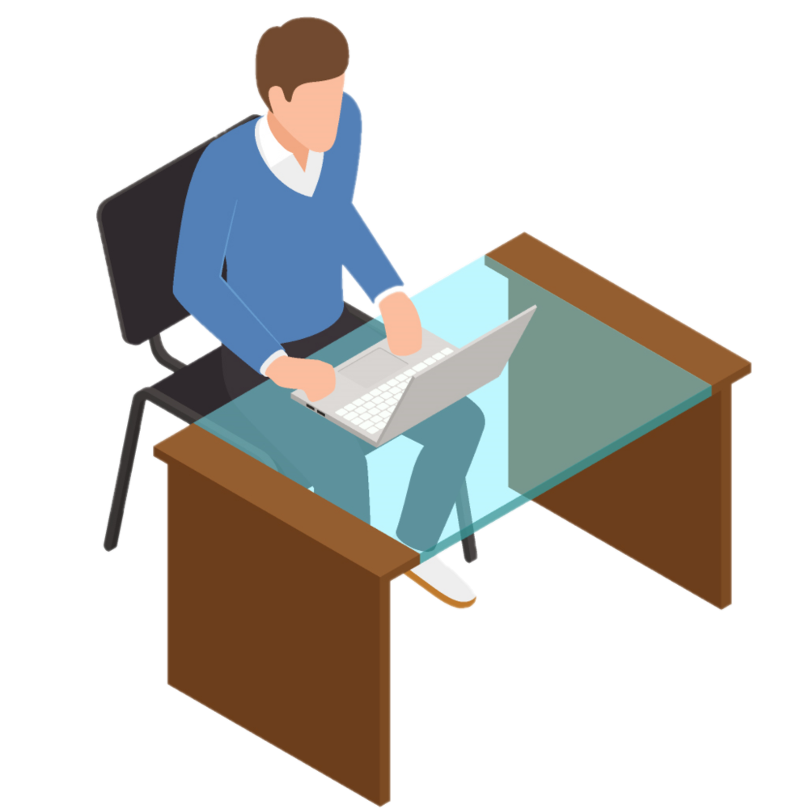

Being true free spirits, Campaigners tend to embrace big ideas and actions that reflect their sense of hope
and goodwill toward others. Their vibrant energy can flow in many directions.
Advantages.
Curious
Observant
Energetic and Enthusiastic
Excellent Communicators
Know How to Relax
Very Popular and Friendly
Disadvantages.
Poor Practical Skills
Find it Difficult to Focus
Overthink Things
Get Stressed Easily
Highly Emotional
Independant to a Fault

Strategies to Study.
Have study groups and discussions with fellow students.
Make mindmaps and brainstorm "what if" questions.
Read up on real-life applications of the subject at hand to help you relate and remember the
materials.
Write down the key deadlines, but you can adjust your daily schedule as new opportunity arises.